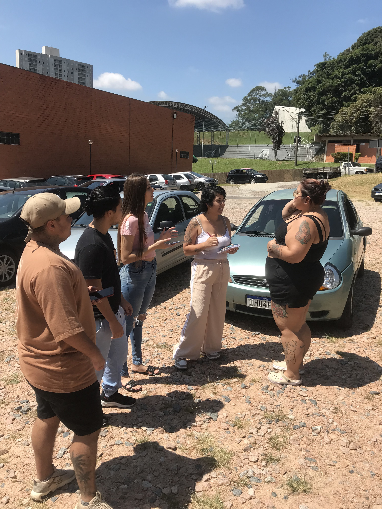
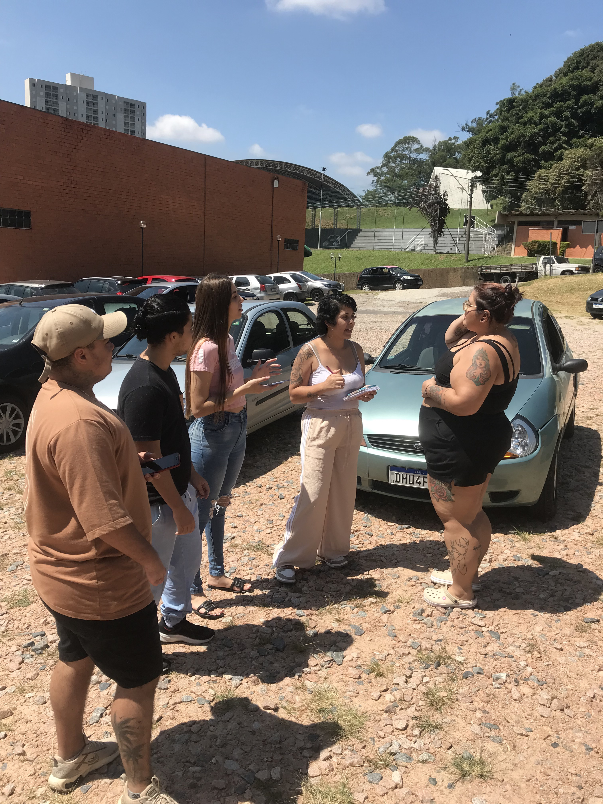
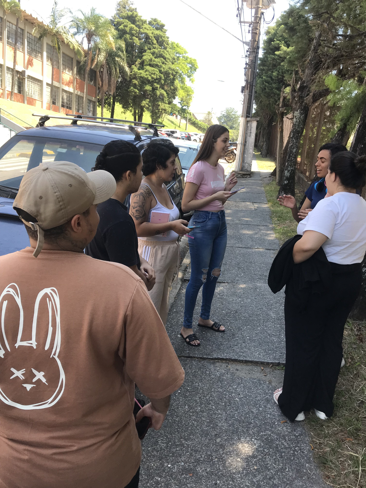
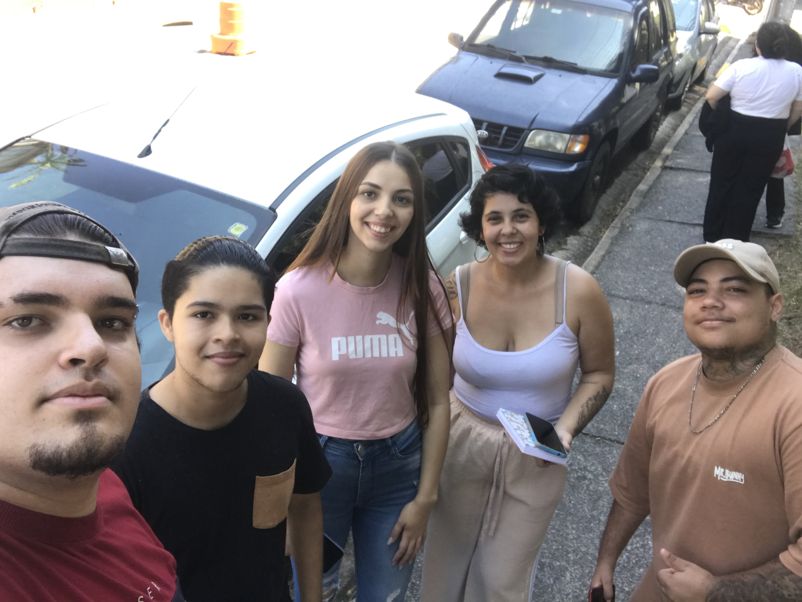
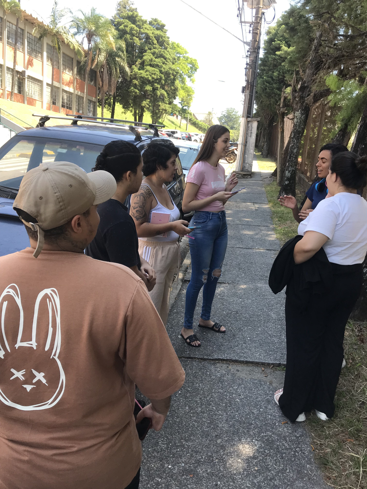
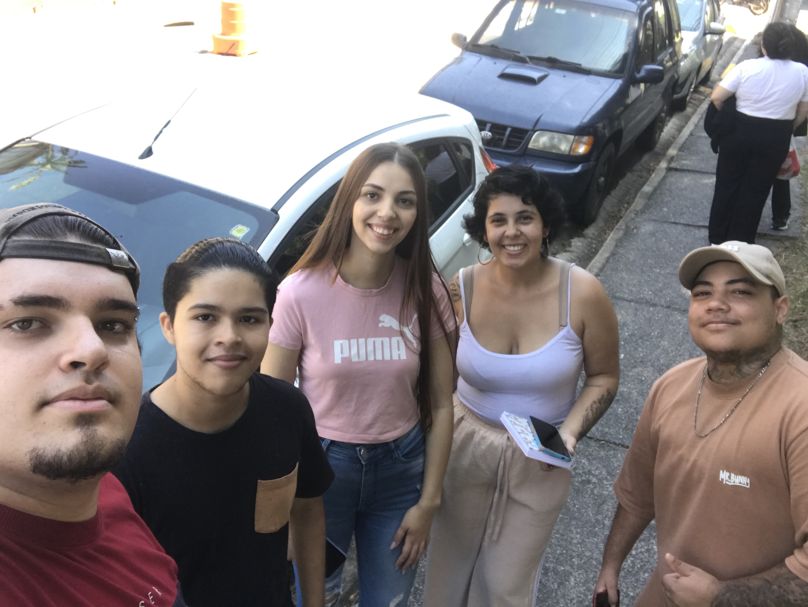

Sobre o Projeto
Este projeto tem como objetivo conscientizar a comunidade local sobre a importância da preservação da vida terrestre, com foco no uso sustentável da água.
Objetivos
- Reduzir o consumo e desperdício de água.
- Promover práticas sustentáveis.
- Implementar tecnologias para o uso eficiente da água.
Relatório
Aqui estão as fotos e os resultados obtidos através do questionário aplicado na comunidade local.
 

 



Perguntas e Respostas
-
Pergunta 1: Qual é o seu consumo médio de água por mês?
Entrevistado 1: Entre 68,00 e 70,00;
Entrevistado 2: 78,00;
Entrevistado 3: 70,00;
Entrevistado 4: 80,00;
Entrevistado 5: 130,00. -
Pergunta 2: O que você acha que pode fazer para reduzir o seu consumo?
Entrevistado 1: Reutilizar água da máquina para lavar o quintal;
Entrevistado 2: Diminuir o tempo no banho e acumular roupa para lavar tudo junto;
Entrevistado 3: Aproveitar a água da chuva da máquina para limpar os quintal;
Entrevistado 4: Fechar a torneira na hora de escovar os dentes e lavar o rosto;
Entrevistado 5: Desligar a torneira na hora de lavar a louça. -
Pergunta 3: Você conhece algum tipo tecnologia para reduzir o consumo de água?
Entrevistado 1: Pressurizador automático;
Entrevistado 2: Não;
Entrevistado 3: A máquina de lavar tem a função de reutilização de água;
Entrevistado 4: Não;
Entrevistado 5: Não.
Relatório Final: Projeto Vida Terrestre - ODS 15
1. Introdução
O projeto "Vida Terrestre - ODS 15" foi desenvolvido com o objetivo de conscientizar a comunidade local sobre a importância da preservação dos recursos naturais, com foco no uso sustentável da água. A iniciativa está alinhada ao Objetivo de Desenvolvimento Sustentável (ODS) 15 da ONU, que visa proteger, recuperar e promover o uso sustentável dos ecossistemas terrestres. A água, como recurso essencial para a vida, foi escolhida como tema central deste projeto, uma vez que seu uso consciente é fundamental para a sustentabilidade do planeta.
A proposta do projeto foi identificar os hábitos de consumo de água na comunidade local, promover a reflexão sobre práticas sustentáveis e sugerir tecnologias que possam contribuir para a redução do desperdício. Para isso, foi realizado um questionário com cinco moradores da região, cujas respostas forneceram insights valiosos sobre o tema.
2. Execução do Projeto
O projeto foi executado em três etapas principais:
- Elaboração do Questionário: Um questionário foi desenvolvido com três perguntas-chave, abordando o consumo médio de água, práticas para redução do consumo e conhecimento sobre tecnologias sustentáveis.
- Aplicação do Questionário: O questionário foi aplicado a cinco moradores da comunidade local. As perguntas foram respondidas de forma voluntária e anônima, garantindo a transparência e a confiabilidade dos dados.
- Análise dos Resultados: As respostas foram organizadas e analisadas para identificar padrões de consumo, práticas sustentáveis já adotadas e o nível de conhecimento sobre tecnologias que ajudam a reduzir o uso de água.
3. Conclusões
A partir das respostas obtidas, foi possível chegar às seguintes conclusões:
- Consumo de Água: O consumo médio de água entre os entrevistados varia de R$ 68,00 a R$ 130,00 por mês. Esses valores refletem diferentes perfis de uso, desde famílias menores até aquelas com maior demanda.
- Práticas Sustentáveis: Os entrevistados demonstraram consciência sobre a importância de reduzir o consumo de água. Entre as práticas mencionadas estão a reutilização da água da máquina de lavar para limpeza de quintais, a diminuição do tempo no banho e o fechamento da torneira durante atividades como escovar os dentes ou lavar louça.
- Tecnologias para Redução do Consumo: A maioria dos entrevistados não conhece tecnologias específicas para reduzir o consumo de água. Apenas um entrevistado mencionou o uso de um pressurizador automático e a função de reutilização de água da máquina de lavar.
- Impacto do Projeto: O projeto alcançou seu objetivo de conscientizar a comunidade sobre a importância do uso sustentável da água. Além disso, as respostas coletadas evidenciam a necessidade de ampliar o acesso a informações sobre tecnologias e práticas que podem contribuir para a preservação dos recursos hídricos.
4. Recomendações
Com base nas conclusões, sugerimos as seguintes ações para continuar o trabalho de conscientização e promover mudanças positivas na comunidade:
- Divulgação de tecnologias sustentáveis, como sistemas de captação de água da chuva e dispositivos de economia.
- Campanhas educativas para reforçar a importância de práticas simples, como fechar a torneira durante atividades cotidianas.
- Parcerias com empresas e órgãos públicos para oferecer incentivos ou descontos na aquisição de tecnologias sustentáveis.
- Expansão do projeto para um número maior de moradores, a fim de obter uma amostra mais representativa e identificar novas oportunidades de intervenção.
5. Considerações Finais
O projeto "Vida Terrestre - ODS 15" demonstrou que pequenas mudanças nos hábitos diários podem ter um impacto significativo na redução do consumo de água. Além disso, evidenciou a importância de disseminar conhecimento sobre tecnologias e práticas sustentáveis. Acreditamos que, com ações contínuas e o engajamento da comunidade, é possível promover um uso mais consciente dos recursos hídricos, contribuindo para a preservação do meio ambiente e a melhoria da qualidade de vida de todos.